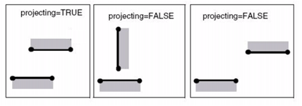

To calculate
edge movement, Matrix OPC begins by associating each movable fragment
with one or more simulation sites. This association takes the form
of a mapping. Some properties you can map by are:
Layer
and tag
Orientation
of the fragment to the edge on the opc layer
Maximum
distance between a fragment and the site(s) to which it is mapped
Weighted distance between a fragment
and its site(s)
Projection
as shown in Figure 1
Figure 1. Graphic Description of Projection